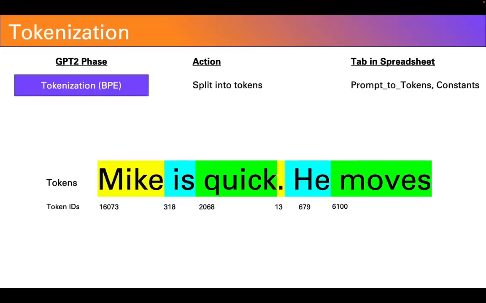

欢迎来到“电子表格即可掌握一切”
Welcome to Spreadsheets Are All You Need
如何通过电子表格理解GPT的工作原理
How GPT Works Where if You Can Read a Spreadsheet You Can Understand Modern AI

本系列课程我们将使用电子表格来实现一个大型语言模型
That's Because in This Series We're Walking Through a Spreadsheet That Implements a Large
Language Model
完全使用基础的电子表格功能来实现，并不仅仅是任何一个大型语言模型
Entirely in Basic Spreadsheet Functions and Not Just Any Large Language Model
我们实现的是GPT-2，这是ChatGPT的早期版本
We're Implementing GPT2, an Early Ancestor of Chat GPT
由于是在电子表格中实现，它只支持较小的上下文长度，并采用了GPT-2的最小形式，称为GPT-2 Small
Now Because It Is a Spreadsheet It Can Only Support a Smaller Context Link and It Does
Implement the Smallest Form of GPT2 Known as GPT2 Small
尽管如此，从架构上讲，它与几年前引起轰动的模型是相同的
But Architecturally for All Intents and Purposes It's the Same Model That Was Breaking
Headlines Just a Few Short Years Ago
我们将在后续视频中逐步深入探讨这些阶段
Let's Take a Look Under the Hood How It Works Now in Subsequent Videos We're Going to Go
Through Each of These Stages Step by Step
但现在，我会简要介绍每个阶段作为未来视频的内容概览
But for Now I'm Going to Touch on Each One Lightly as a Kind of Table of Contents for Future
Videos
此外，我在电子表格的右侧添加了一列，显示哪个标签页对应GPT-2内部的哪个操作
In Addition, I've Added a Final Column Here on the Right That Indicates What Tab in the
Spreadsheet Corresponds to What Action Inside GPT2
让我们从开始说起，输入文本后，文本会被拆分成一系列的令牌
Let's Start at the Beginning After You Input Your Text It Is Split Into a Series of Tokens
例如，"Mike is quick he moves"会被拆分成令牌
So for Example Let's Take Mike Is Quick He Moves This Would Be Split Into Tokens Per a
Predefined Dictionary
你会注意到这里的每个单词通常对应一个令牌，但并非总是如此
Now You'll Note That Every Single Word Here Corresponds to a Single Token But That Is Not
Always the Case
实际上，一个单词被拆分成两个、三个甚至更多的令牌并不罕见
In Fact It's Not Uncommon for a Single Word to Be Split Into Two, Three or Even More Tokens

在电子表格中，这是你输入提示的地方，每个单词需要单独一行，你还需要添加空格和标点符号
Let's Take a Look at the Spreadsheet So Here's Where You Input Your Prompt and Because of
the Way the Parsing Works You Have to Put Each Word a Separate Line You Can Have to Add the
Spaces as Well as the Punctuation
之后，这些令牌会被带到一个叫做“从提示到令牌”的标签页，通过一个叫做字节对编码的算法，将它们映射到一个已知的令牌ID列表
It Then Gets Taken to This Sheet Which Is or Tab Called Prompt to Tokens Where It Goes
Through an Algorithm Called Byte Pair Encoding to Map It to a Final List of Known Token IDs
现在我们有了令牌，接下来需要将这些令牌映射到一系列数字上，称为嵌入
Now That We Have the Tokens We Need to Map Them to a Series of Numbers Called an Embedding
在GPT-2
Small的情况下，每个令牌都映射到一个包含768个数字的长列表，这些数字捕获了每个令牌在提示中的含义和位置
Every Token Is Mapped to a Long List of Numbers in the Case of GPT2 Small It's a List of 768
Numbers These Capture Both the Meaning as Well as the Position of Each Token in the Prompt
让我们来看看电子表格里是如何实现的
Let's See How This Works Inside the Spreadsheet
在这个实现中，我们在“令牌到文本嵌入”标签页操作，分成两部分
Okay So Here We Are in the Spreadsheet That Implements This It's Tokens to Text Embeddings
Tab and There's Two Parts to It
在顶部，你会看到我们的提示令牌，例如'Mike is quick he moves'，这些是我们之前看到的提示ID
At the Top You'll See Our Prompt Tokens Mike Is Quick He Moves and These Are Those Prompt
IDs We Saw From the Earlier Stat
然后从第三列开始是一个列表，包含768个数字，代表单词'Mike'的语义意义
And Then From Columns Three Onwards Are the List the 768 Numbers That Represent the Semantic
Meaning of the Word Mike
我们接着看到列770，可以看到这个列表在这里结束
Let's Go Look at Column 770 and We Can See Where This List Ends Right Here
回到开头，你会注意到这里有另一个列表
Let's Go Back to the Beginning and You'll Notice There's Another List Here
这个列表的任务是改变上面列表中的令牌，以反映它们在提示中的不同位置
The Job of This List Is to Actually Change the Tokens from the List Above to Reflect Their
Different Positions in the Prompt
通过改变单词'Moves'为'Mike'，我将在这里展示并演示
Let Me Explain and Demonstrate That Here by Changing This Word Moves to the Word Mike Which
Is the First
我们将重新计算令牌，看到我们再次得到'Mike'
We'll Go Through Here We'll Recalculate Our Tokens We'll See We Get Mike Again
然后回到我们的令牌到文本嵌入表，你会注意到这里的'Mike'具有相同的ID，并且嵌入值与之前相同
Then We Back to Our Tokens to Text Embeddings We'll Calculate the Sheet and You'll Notice
That Mike Here Has the Same ID and Has the Exact Same Embedding Values as It Did Does up
Here Right Row Two and Row Seven Are Totally Identical
这是因为这一组行的唯一任务是捕获语义意义
That's Because the Only Job of This First Set of Rows Is to Capture the Semantic Meaning
但是当我们查看这里的位置嵌入部分时，你会注意到第一位置的'Mike'的嵌入值与第六位置的'Mike'的嵌入值不同
But When We Take a Look Here at This Part Where We Have the Position Embeddings You'll
Notice That the Values of the Embedding for Mike at Position One Are Different Than the
Values for Mike at Position Six
我们有效地稍微改变了'Mike'的嵌入值，以反映它在提示中的不同位置
We've Effectively Altered the Values of the Embeddings for Mike Slightly to Reflect Its
Different Position in the Prompt
现在我们已经捕获了令牌的含义和位置，它们将传递到一系列的层或模块，首先是多头注意力机制，然后是多层感知机，这是神经网络的另一种名称
Okay Now That We've Captured Both the Meaning and the Position the Tokens in the Prompt They
Pass on to a Series of Layers or Blocks the First Is Multi-Headed Attention and Then the
Second Is What's Known as a Multi-Layer Perceptron That's Another Name for a Neural Network
让我们再次考虑我们的句子 'Mike is quick he moves'，我们希望Transformer或GPT来填写最后一个词
Let's Consider Our Sentence Again Mike Is Quick He Moves Where We Want the Transformer or
GPT to Fill in the Last Word
注意力机制的第一阶段试图弄清楚句子中最重要的词是哪些，以及它们如何相关
The Attention Mechanism the First Phase Tries to Figure Out What Are the Most Important
Words Words in the Sentence and How They Relate
例如，它可能认为'he'指的是提示中更早的'Mike'，或者意识到'moves'和'quick'很可能有关联
So for Example the Word He It Might Recognize as Referring to M Earlier in the Prompt or It
Might Realize That the Word Moves and Quick Probably Relate
这些信息对于下一层——多层感知机——非常重要，帮助它解析'quick'这个词在句子中的确切含义
This Information Is Important for the Next Layer the Multi-Layer Perceptron So Take for
Example This Word Quick It Has Multiple Meanings in English It Can Mean Moving Fast It Can
Mean Bright as in Quick of Wit It Can Mean a Body Part as in the Quick of Your Fingernail
and in Shakespearean English It Can Even Mean Alive as Opposed to Dead as in the Phrase the
Quick and the Dead
注意力层传递的信息有助于多层感知机确定'quick'这个词在这个句子中最可能的含义，可能是指物理空间中的快速移动
The Information from the Attention Layer That the Word Moves Is There with the Word Quick
Helps the Multi-Layer Perceptron Disambiguate Which of These Four Meanings Is Most Likely in
This Sentence and That It's Most Likely the First One Moving in Physical Space
它将使用这个信息来确定完成提示的最可能的下一个词，比如'quickly'、'fast'或'around'，这些词都与物理空间中的快速移动有关
And It Would Use That to Figure Out What the Most Likely Next Word to Complete the Prompt Is
Like the Word Quickly or the Word Fast or the Word Around All of Which Are About Fast
Movement in Physical Space
值得注意的是，这种注意力和感知机的处理过程在GPT-2 Small中是迭代发生的，共有12个不同的层次
It's Also Important to Note That This Attention Then Perceptron Attention Then Perceptron
Process Happens Iteratively in GPT2 Small It Happens Across 12 Different Layers as It
Iteratively Refines Its Prediction of What the Next Most Likely Word or Token Should Be
让我们看看电子表格中这是如何实现的，你会注意到电子表格中有这些标签页：Block Zero，Block
One，Block Two，一直到Block Eleven
Let's See How This Is Implemented in the Spreadsheet So You'll Notice in the Spreadsheet
There Are These Tabs Block Zero Block One Block Two All the Way to Block Eleven

这些是我们的12个块，Block Zero的输出成为Block One的输入，Block One的输出成为Block
Two的输入，依此类推
These Are Our 12 Blocks and the Output of Block Zero Becomes the Input of Block One and the
Output of Block One Becomes the Input of Block Two So They're All Chained Together All the
Way Through
让我们看看其中一个块的内部，这是第一个块，每个块有大约16步的实现过程
Let's Look Inside One of These Blocks So Here's the First Block and Each Block Has About 16
Steps in This Implementation
从第一步到大约第10步主要是您的注意力机制，从第10步到剩下的16步是多层感知机
Steps One All the Way to Around Step 10 Are Basically Your Attention Mechanism and from Step
10 All the Way to the Remaining 16 Is the Multi-Layer Perceptron
我们将在未来的视频中更详细地介绍，但现在我想给你们一个预览
We're Going to Go Through This in a Lot More Detail in Future Videos but I Want to Give You
a Sneak Peek of Something
这里在第七步是注意力机制的核心，它告诉我们哪些词受到了最多的注意
Here Right at Step Seven Is the Heart of the Attention Mechanism It Tells Us Where It's
Paying the Most Attention to Amongst the Words
让我们看看'he'这个词，你会注意到这里的最大值0.48，表明它最可能指的是'Mike'
Let's Look at the Word 'He' You'll Notice the Largest Value Here 0.48 Is Highest Right Here
So It's Taking the Word 'He' and It's Realizing That Most Likely Is Referring to the Word
'Mike'
0.48的值大于其他任何值，因此它将对多层感知机传递的值产生最大的影响
0.48 Is Larger Than Any of the Other Values So It's Going to Influence the Values It Passes
to the Multi-Layer Perceptron More Than Any of the Other Words
其他的词影响较小，我们再看看'移动'这个词，你会注意到它最多看的是'Mike'，然后是'quick'
The Other Other Words Are Getting a Much Smaller Influence on the Output It Passes Along
Let's Take the Word 'Moves' Again You'll Notice That It's Looking Most at the Word Mike and
Then the Next Other Word It's Looking Most at Is Quick
它将使用这两个词的信息，传递到下一层来解释或确定单词'moves'的意义或价值
It's Going to Use the Information from Those Two Words Again That It Passes to the Next
Layer to Try and Interpret the Value or Meaning of the Word 'Moves'
我们即将结束，最后一步是语言模型头部，它决定了实际的下一个最可能的令牌是什么
Okay We're Almost at the End the Last Step Is the Language Head Which Figures Out What the
Actual Next Likely Token Is
它通过将最后一个块的输出转换为所有已知令牌及其字典中的一组概率，然后从中随机选择一个令牌来完成句子
What It Does Is It Takes the Output of the Final Block and Converts It Into a Set of
Probabilities Across All the Known Tokens and Its Dictionary and Then It Picks from Amongst
the Most Likely Tokens Randomly One of Those Tokens to Complete the Sentence
在这种情况下，它简单地选择了概率最高的令牌'quickly'并填充了它
In This Case It's Picked Simply the Highest Probability Token Which Was 'Quickly' and Fills
That In
现在让我们看看电子表格，你会看到这是分布在三个标签页上：层规范化，生成logits，和softmax
Let's Take a Look at the Spreadsheet Now in the Spreadsheet You'll See This Is Broken Across
Three Tabs Layer Norm Which Is a Process We'll Talk About in a Future Video Generating
Logits and a Softmax Again Concepts We Talk About Later to Finally Get Our Predicted Token
在真正的大型语言模型中，它通常会从一组最可能的令牌中选择，但为了简化电子表格，我们只是简单地选择了最可能的令牌
Now in a True Large Language Model That You've Probably Played with It Actually Picks from
Amongst a Set of the Most Likely Tokens But in Order to Simplify This Sheet We Just Simply
Pick from the Very Most Likely Token Which Gives a Very Consistent Output
这就是所谓的温度为零的选择，当你走出温度零时，它开始从不只是顶部的令牌中选择，而是从顶部的10个或20个或更多的令牌中选择，并根据算法从中选择
This Is What's Known as Having Temperature Zero When You Go Outside of Temperature Zero It
Starts Picking from More Than Just the Top Token and It Starts Looking at the Top 10 or 20
or 30 or More Tokens and It Picks from Them According to an Algorithm
好的，这就是GPT-2的一个概览，我们将在未来的视频中逐步深入每一个步骤，但现在希望这能为你提供一个了解其内部运作的起点
Okay That's GPT2 at a Glance We'll Be Going Through Each of These Steps in Future Videos But
for Now I Hope That Gives You a Starting Point as to What's Going on Under the Hood and
Where You Can See It Happening Live for Yourself Inside the Spreadsheet
谢谢大家的观看！
Thank You!